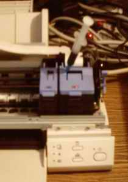

Чистка печатающей головки и заправка картриджей принтера Epson Stylus Color 600
Внимание! Автор действовал на свой страх и риск, о чем заранее предупреждает.
Для принтера Epson Stylus Color 600 1997 г. выпуска использовались исключительно оригинальные (original) картриджи, тем не менее, после примерно пяти лет безупречной работы сопла головки в течение месяца стремительно засорились настолько, что принтер вообще перестал что-либо печатать. Попытки прочистки головки посредством утилиты Head Cleaning (аппаратный и программный уровни) не привели к положительному результату, несмотря на то, что было "потрачено" два картриджа (черный - S020093 и цветной - S020089). Были сделаны два вывода: во-первых, головку придется прочистить каким-либо другим способом; во-вторых, оригинальные картриджи не так уж и безупречны и можно попробовать поменять их на что-либо подешевле (тем более для данного принтера с таким сроком службы).
После анализа полученной информации о способах очистки и заправки было решено разработать более приемлемую технологию.
Подготовка картриджей:
Картриджи было решено заправлять, не снимая с принтера. Головка принтера должна находиться в запаркованном состоянии. С принтера (в отключенном состоянии) снимается верхняя крышка (крепится четырьмя винтами: два спереди, два сзади). Через щели в прижимных планках чернильных картриджей сверлом диаметром 0.8 ... 1.0 мм (зависит от диаметра иглы шприца, который будет использоваться для заправки; чем меньше, тем лучше) с помощью ручной дрели аккуратно сверлятся отверстия в картриджах (верхняя часть картриджа просверливается насквозь). Отверстия можно сверлить под некоторым углом. При сверлении не прилагать чрезмерных усилий. В черном картридже (S020093, расположен слева) сверлится одно отверстие. В цветном картридже (S020089, расположен справа) сверлятся три отверстия (на каждую чернильницу).
Если принтер используется достаточно интенсивно (включается хотя бы раз в 3 дня, печатается порядка 10 страниц в день, замена картриджа производится 1 ... 2 раза в месяц), то просверленные отверстия, через которые в дальнейшем будет производиться заправка, заклеивать не обязательно.
Верхняя крышка устанавливается на место (вообще говоря, принтер может работать и без нее). Затем принтер включается на некоторое время и выключается после того, как головка совершит все положенные передвижения (для корректной парковки головки).
Заправка картриджей:
Заправку картриджа удобнее производить в тот момент, когда индикатор отсутствия соответствующих чернил начинает мигать (т. е. принтер еще может печатать, но уже не может использоваться утилита чистки головки, и желательно заранее подготовиться к возможному окончанию чернил в картридже).
Головка принтера должна находиться в запаркованном состоянии. С принтера (в отключенном состоянии) снимается верхняя крышка (крепится четырьмя винтами: два спереди, два сзади). Заправка картриджей производится с помощью шприца, игла которого вводится в просверленное отверстие приблизительно на 1 см. Для заправки используются черные и цветные чернила для принтера Epson Stylus Color Series 400/500/600/700/800/Photo (приобретены в магазине комплектующих) или дистиллированная вода (может использоваться в процессе прочистки головки). В черный картридж заливается около 10 мл черных чернил. В цветной картридж - приблизительно по 5 мл чернил соответствующего цвета в каждую чернильницу (порядок цветов, если смотреть на принтер спереди, слева направо: синий, красный, желтый - соответствует порядку цветов на всех значках, помещенных на принтере). Скорость заправки должна быть такой, чтобы чернила успевали впитываться пористым материалом, находящимся в картридже. Можно использовать один шприц, промывая его перед заливкой чернил нового цвета дистиллированной водой. Верхняя крышка устанавливается на место (вообще говоря, принтер может работать и без нее). Затем принтер включается на некоторое время и выключается после того, как головка совершит все положенные передвижения (для корректной парковки головки).

Рис. 1. Заправка чернил синего цвета с помощью шприца.
Вместо чернил можно использовать дистиллированную воду. После двух заправок дистиллированной водой вместо чернил качество печати удовлетворительное. Если используется печать одними черными чернилами, то в цветной картридж можно заливать для экономии только дистиллированную воду.
При замене чернил желательно проверить их на совместимость. Старые и новые чернила смешиваются в равных долях в небольшом количестве (менее 1 мл) в закрытом сосуде (чтобы не высыхали). Если через час смесь остается равномерно окрашенной, жидкой, без осадка и видимых изменений, то можно сделать вывод о совместимости чернил.
Если принтер используется достаточно интенсивно (включается хотя бы раз в 3 дня, печатается порядка 10 страниц в день, замена картриджа производится 1 ... 2 раза в месяц), то отверстия, через которые производилась заправка, заклеивать не обязательно. В противном случае их можно заклеить небольшими кусочками скотча.
Когда в процессе дальнейшей эксплуатации принтера индикатор отсутствия чернил загорится (может пройти достаточно длительное время после вышеописанной процедуры заливки чернил), производится имитация переустановки соответствующего картриджа. В соответствии с инструкцией по эксплуатации принтера кнопка чистки головки удерживается три секунды, после чего печатающая головка сдвигается влево в позицию установки чернильных картриджей. Далее прижимная планка чернильного картриджа откидывается вверх и сразу же аккуратно поворачивается вниз до защелкивания (картридж вынимать не нужно). Вновь производится нажатие на кнопку чистки печатающей головки, после чего принтер начинает процедуру заправки чернилами системы подачи чернил. В принципе аналогичные действия можно совершить и при незаправленном картридже (идентифицируемом принтером и деспулером, как пустой), так как чернил обычно остается довольно много, и заправку можно отложить на потом.
В некоторых случаях после имитации переустановки картриджа приходится 2 ... 3 раза производить процедуру чистки головки Head Cleaning (по-видимому, при заправке образуются воздушные полости).
Иногда количество заправленных чернил оказывается недостаточным или при длительных перерывах в работе происходит их высыхание, следствием чего является ухудшение качества печати (можно оценить процедурой Nozzle Check - проверка сопел). В этих случаях картридж следует дозаправить (чернилами соответствующего цвета или дистиллированной водой - до 5 мл), не производя его переустановку, и при необходимости прочистить головку утилитой Head Cleaning.
Ресурс картриджей:
Картриджи оригинальные и Print-Rite выдерживают, как правило, не менее 10 заправок и переустановок. Картриджи SkyHorse выдерживают до 5 заправок и переустановок. Показателем деградации эксплуатационных свойств картриджа является снижение качества печати. При использовании процедуры Nozzle Check (проверка сопел) линии, соответствующие черному или цветному картриджу, получаются неровными, размазанными, некоторые из них смещаются. Это служит сигналом о необходимости замены данного картриджа.
Чистка головки с отмачиванием:
Если сопла головки засорились настолько, что попытки прочистки головки посредством утилиты Head Cleaning (аппаратный и программный уровни) не приводят к положительному результату, то можно попробовать отмачивание головки.
Головка принтера должна находиться в запаркованном состоянии. С принтера (в отключенном состоянии) снимается верхняя крышка (крепится четырьмя винтами: два спереди, два сзади). Затем аккуратно отводится рычажок, фиксирующий головку (находится снизу головки), сама головка вручную перемещается влево. На место парковки, там, где виден пористый материал, окрашенный использованными чернилами, кладется намоченная в дистиллированной воде чистая ткань (использовалась "оптическая замша", но можно применить любую ткань, хорошо впитывающую воду, и даже фильтровальную бумагу). Головка вновь помещается на место парковки на смоченную ткань (не повредите фиксирующий рычажок). Производится отмачивание в течение 0.5 ... 1 часа. Ткань снимается. Принтер включается, и чередованием процедур Head Cleaning и Nozzle Check (необходим компьютер) производится чистка головки и проверка сопел. Если сопла не прочистились, то отмачивание головки повторяется с использованием чистой ткани, смоченной дистиллированной водой. И так несколько раз, пока не будет получен положительный результат. Картриджи по мере расходования чернил можно заправлять дистиллированной водой (для экономии).
Внимание! Используйте чернила известного, хорошо зарекомендовавшего себя производителя, и дистиллированную воду.
Не используйте кипяченую или фильтрованную водопроводную воду, этиловый спирт, водку, нашатырный спирт, чернила неизвестного происхождения.
05.02.2004
05.07.2005
26.01.2006
01.07.2010
Альтернативные источники
энергии
Компьютеры и Интернет
Магнитные поля
Механотронные системы
Перспективные
разработки
Электроника и
технология